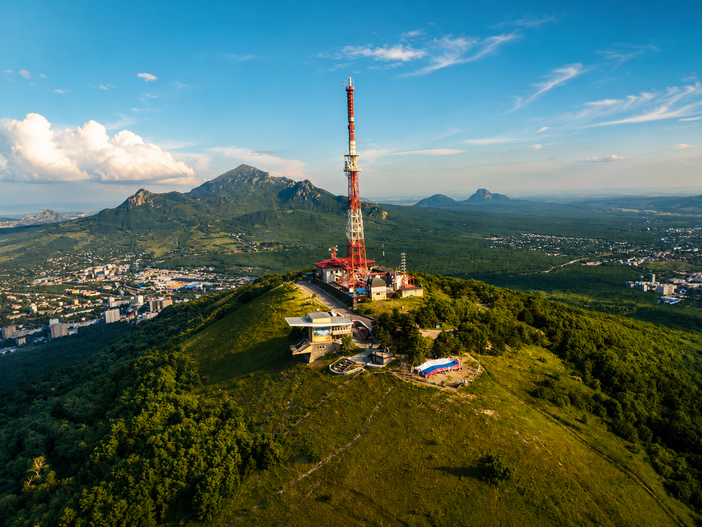
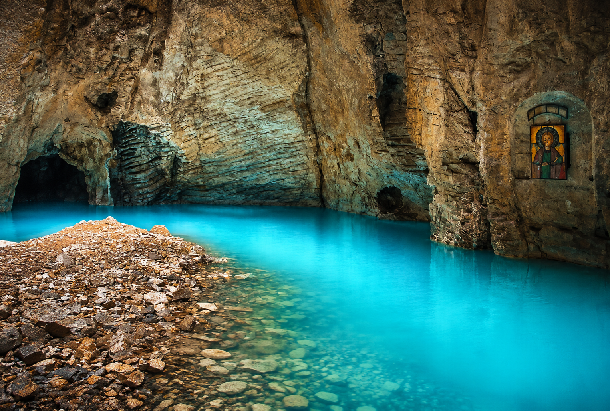
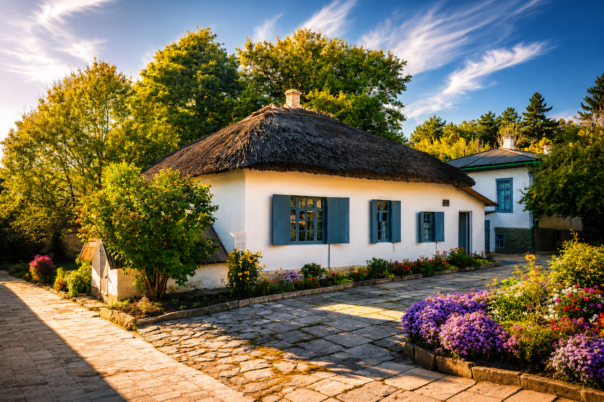
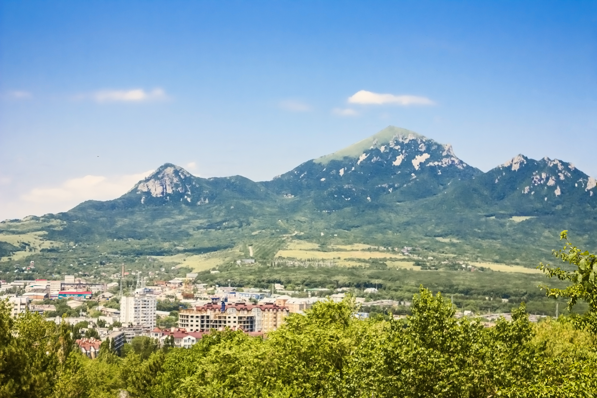
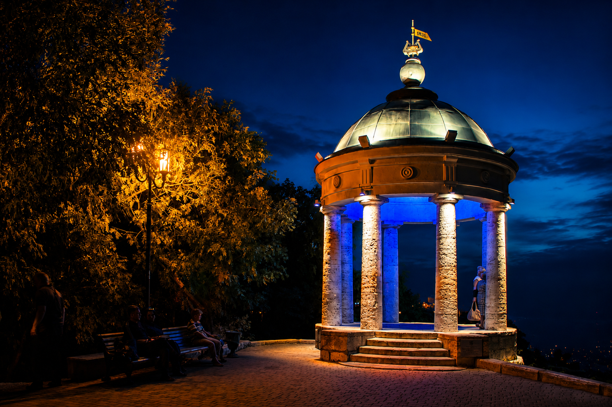
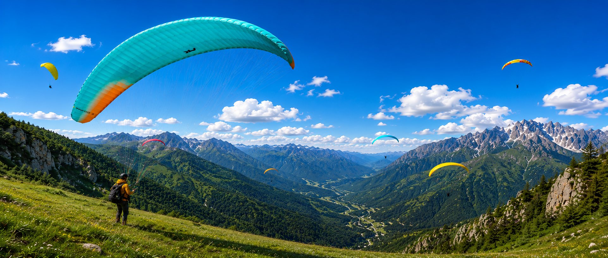

Пятигорск держит редкий баланс: курортная легкость, горный воздух, литературная память и живой ритм города, где прогулка почти всегда превращается в маршрут с видом.
Кавказские Минеральные Воды
Пятигорск — сердце Кавказских Минеральных Вод
Город гор, истории и атмосферы Кавказа
Кратко о городе
Пятигорск раскрывается не сразу
Здесь не нужно торопиться. Лучше двигаться от Машука к старым улицам, от минеральных источников к смотровым точкам, оставляя место для пауз, света и неожиданных деталей.
Достопримечательности
Главные места Пятигорска

01
Машук
Главная высота Пятигорска. С вершины город становится объемным: видны курортные кварталы, зеленые склоны, линия Бештау и дальний силуэт Кавказских гор.

02
Провал
Бирюзовое минеральное озеро внутри пещеры. Место работает как небольшая природная сцена: прохладный тоннель, вода, камень и ощущение старого курорта.
03
Цветник
Исторический центр прогулок. Отсюда удобно начинать день: старые аллеи, курортная архитектура, кафе, тенистые дорожки и мягкий переход к главным маршрутам.

04
Лермонтовские места
Пятигорск невозможно отделить от Лермонтова. Домик, старые улицы и маршруты вокруг Машука добавляют городу литературную глубину и тихую историческую интонацию.

05
Бештау
Гора, давшая имя Пятигорску. Она видна из разных точек города и задает всему маршруту масштаб: Пятигорск ощущается не отдельно, а как часть горного ландшафта КМВ.
Атмосфера города
Пятигорск лучше читать как историю
Утро на Машуке
В начале дня город особенно тихий. Свет ложится на склоны мягко, воздух остается прохладным, а обзор с высоты помогает понять, как Пятигорск устроен вокруг горы.
Минеральные источники
Курортная природа здесь не декоративная, а настоящая: вода, камень, запах сероводорода и старые маршруты напоминают, почему КМВ стали местом долгих поездок и возвращений.
Старые улицы
Пятигорск раскрывается в деталях: фасадах, оградах, тенях деревьев, небольших подъемах и поворотах. Это не музейная тишина, а живой город с исторической памятью.

Закаты Кавказа
Вечером Пятигорск становится глубже: загораются огни, силуэты гор темнеют, а смотровые точки превращаются в спокойный финал дня без лишнего шума.
Пятигорск в деталях
Что помогает почувствовать город
Мягкий курортный климат, комфортный для прогулок большую часть теплого сезона.
Город лежит у подножия Машука, поэтому почти каждый маршрут связан с подъемами и видами.
Горы, лесные склоны, минеральные воды и открытые панорамы создают природный каркас города.
Пятигорск хранит память курортной архитектуры XIX века и лермонтовских маршрутов.
Источники и лечебные воды остаются важной частью характера Кавказских Минеральных Вод.
Самые приятные месяцы для прогулок и видов — с апреля по октябрь, особенно утром и перед закатом.
Некоторые города посещают. Пятигорск запоминают.

Воздушное приключение
ПОЛЕТ НА ПАРАПЛАНЕ
Открой для себя Кавказ с высоты птичьего полёта.